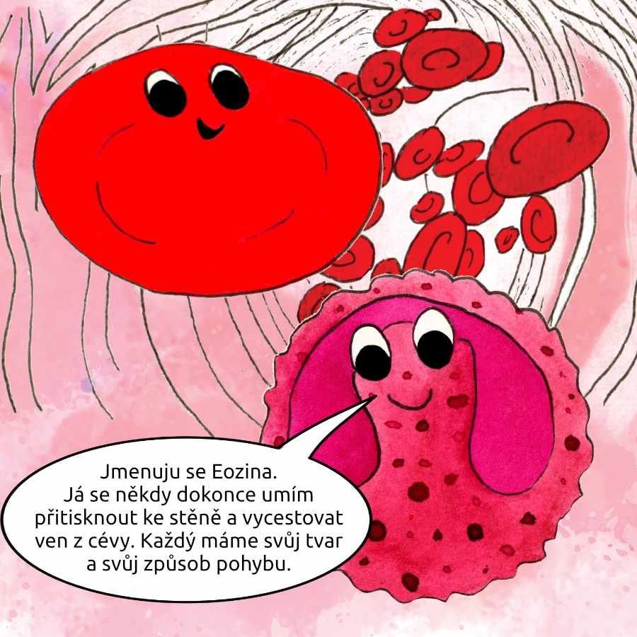

Naše zvídavá krvinka Krvinka vystřelila ze srdce rychlostí blesku a vyrazila za dalším dobrodružstvím. Krvinka měla ráda tyhle starty, těšila se, co zažije při této cestě.
Tentokrát se před ní otevřela cesta do ruky. „Ruka," zašeptala si Krvinka v duchu a v proudu se maličko pootočila, aby si mohla prohlédnout směrovky. Širokými cévami se postupně dostala až do nejmenších vlásečnic.
Vlásečnice jsou tak malinké cévy, že vypadají jako jemná pavučina v tkáni. Propojují tepny a žíly, aby se krev dostala úplně všude, i do míst, kam se velká céva nikdy nevejde. A jsou tak úzké, že se jimi často proplétá jedna krvinka za druhou, skoro jako kdyby šly v zástupu úzkou chodbou.
„Jé, ty jdeš taky do ruky?" ozvalo se vedle ní.
Krvinka se otočila a uviděla další červenou krvinku. Byla o kousek menší, čerstvě vytvořená a nezkušená. Byla ale stejně jasně červená a stejně zvědavá.
„Ahoj, já jsem Krvinka," představila se.
„Já jsem Hema," usmála se druhá. „Taky mě poslali do vlásečnic ruky. Prý tam dneska bude těsno."
„Ve vlásečnicích je těsno skoro vždycky," zasmála se naše Krvinka klidně. „Ale my na to máme tvar."
Hema se na chvíli zamyslela, pak se na sebe podívala, jako by chtěla zkontrolovat, jestli je všechno na svém místě.
„Myslíš ten náš dvojitě promáčknutý tvar?"
„Přesně ten," přikývla Krvinka. „Nejsme kuličky. Jsme takové dvojduté disky. Když se na nás někdo podívá z boku, vypadáme trochu jako piškot. Uprostřed jsme tenčí a na okrajích trochu plnější. Říká se tomu bikonkávní tvar."

Hema si spokojeně oddechla.
„A k čemu je to dobré? Proč nejsme třeba jako krevní destičky?"
„Tenhle tvar nám dává dvě velké výhody," začala Krvinka. „Za prvé máme díky promáčknutí větší povrch. To znamená víc místa, kudy se může kyslík rychle přichytit."
„Takže víc povrchu, víc místa pro kyslík," shrnula Hema.
„Ano," přikývla Krvinka. „A navíc jsme uprostřed tenčí. Kyslík se tak dostane dovnitř rychleji."
Hema se zatvářila důležitě.
„Kyslík se váže na náš hemoglobin, že?" řekla, jako by to byla tajná přezdívka.
„Přesně," usmála se Krvinka. „A aby se do nás hemoglobinu vešlo co nejvíc, nemáme uvnitř jádro."
„A to je druhá výhoda," pokračovala Krvinka. „Bez jádra jsme ohebnější, pružnější. Když přijde úzká vlásečnice, umíme se protáhnout, zmáčknout, prodloužit a pak se zase vrátit do svého dvojdutého tvaru."
Cesta se před krvinkami začala zužovat. Ze široké tepny byla menší tepénka, z ní ještě menší a nakonec průchod tak úzký, že se v něm nedalo plavat vedle sebe. Krvinky se řadily jedna za druhou jako korálky na niti.
„Tak jo," zašeptala Hema. „Tady se ukáže, jestli jsme opravdu piškoty, nebo kuličky."
„Kuličky by se tady trápily," odpověděla Krvinka klidně. „Měly by menší povrch a byly by tužší. My máme okraje, které se umí opřít, a střed, který je tenký a ohebný."
První úzký průchod se objevil jako malá branka. Krvinka cítila, jak se dotýká stěn vlásečnice. Nebylo to nepříjemné, jen těsné, jako když se prochází úzkou chodbou s měkkými stěnami.
„Teď," řekla si Krvinka a udělala to, co uměla nejlépe.
Její dvojdutý tvar se jemně změnil. Z piškotu se stal protáhlejší tvar, jako měkký váleček. Okraje se přitiskly, střed se vyrovnal a celá Krvinka se protáhla tak, aby proklouzla.
Hned za ní se protáhla Hema.
„Jde to!" špitla Hema, když byly uvnitř.
„Jde," odpověděla Krvinka. „A teď to nejdůležitější. Tady se předává kyslík."
Ve vlásečnici se proud zpomalil, jako by tělo chtělo dát krvinkám čas. Čas na to, aby se kyslík mohl snadno přesunout přes tenkou stěnu cévy tam, kde je potřeba.
Krvinka cítila, jak je její povrch jako velká jemná plocha. A právě ten větší povrch, který má díky promáčknutí, dělá práci rychlejší a jednodušší.
Před nimi byla vlásečnice ještě užší než ta předchozí.
Krvinka se přizpůsobila. Její tvar se znovu změnil, tentokrát výrazněji. Protáhla se, zúžila, přitiskla se ke stěně a pak, pomalu a trpělivě, proklouzla.
Hema ji následovala, krok za krokem, dotek za dotekem.
A pak, za úzkým místem, přišlo něco, co bylo vždycky příjemné.
Prostor.
Vlásečnice se maličko rozšířila, proud se opět zvolna rozběhl a Krvinka ucítila, jak se její tělo vrací.
Ne skokem, ne nárazem. Jemně. Pružně. Jako kdyby si pamatovala svůj tvar.
Z protáhlého válečku se znovu stal dvojdutý disk, piškot s promáčknutým středem. Přesně tak, jak má být.
„A jsme zpátky," vydechla Hema.
„Ano," usmála se Krvinka. „Umíme měnit tvar a pak se zase vrátit. To je naše tajná schopnost. A náš tvar nám ji umožňuje."
V tu chvíli kolem proplula bílá krvinka. Byla větší, světlejší a působila soustředěně, jako někdo, kdo má pořád co dělat.
„Zdravím vás," řekla bílá krvinka krátce, ale přátelsky. „Vy jste ty dvě, co se vždycky protáhnou i tam, kde je cesta úzká jako jehla."
„Zdravím," odpověděla Krvinka. „Ty jsi bílá krvinka, že?"
„Ano," přikývla. „Jmenuju se Eozina. Já se někdy dokonce umím přitisknout ke stěně a vycestovat ven z cévy. Každý máme svůj tvar a svůj způsob pohybu."
Hema se na sebe podívala s tichou hrdostí. „My máme bikonkávní tvar."
Eozina se usmála. „A ten piškot je geniální. Větší povrch a pružnost. To je přesně to, co v těchhle malých uličkách funguje."
„A bez jádra," dodala Krvinka.
„Přesně," přikývla Eozina a odplula dál, klidná a jistá jako někdo, kdo ví, kam patří.
Krvinka s Hemou pokračovaly z posledních vlásečnic do malých žilek, které už byly o něco širší. Tady se dalo zase trochu volněji plavat.
„Tak co," řekla Hema, „dneska jsme to zvládly."
„Zvládly," souhlasila Krvinka. „Náš tvar nám pomohl hned dvakrát. Jednak při naložení kyslíku, protože máme velký povrch a jsme tenké uprostřed. A taky pro cestu, protože jsme pružné a bez jádra."
„A umíme se do původního tvaru vrátit," dodala Hema spokojeně.
„To je důležité," řekla Krvinka. „Kdybychom se neuměly vracet, zůstaly bychom v podivných tvarech. Ale my jsme stavěné na to, že se přizpůsobíme a zase se srovnáme."
Proud je nesl dál, z ruky do větších žil, směrem k srdci. Cesta se postupně rozšiřovala, jako když se úzké uličky mění v široké třídy.
A když se před nimi znovu objevilo srdce, Krvinka se na okamžik usmála.
„Tak," řekla tiše Hemě, „za chvíli nás zase vystřelí."
„A kam příště?" zeptala se Hema.
Krvinka se nechala unášet do srdeční komory.
„Kamkoli. Vždycky tam, kde bude potřeba projít i tou nejmenší cestou. Proto máme tvar piškotu. Proto jsme dvojduté. Proto jsme pružné."
Srdce se stáhlo, jako by si chystalo další start. A Krvinka, zvídavá a moudrá průvodkyně, byla připravená.
Na další dobrodružství.